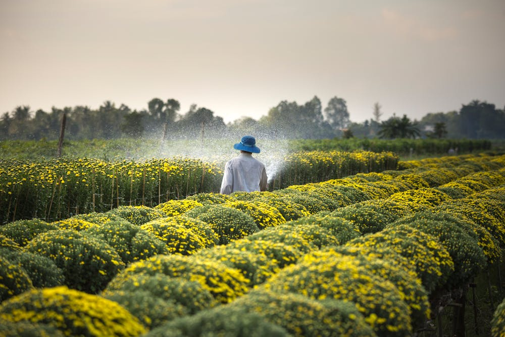
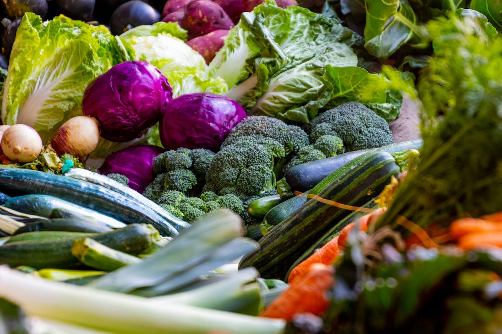
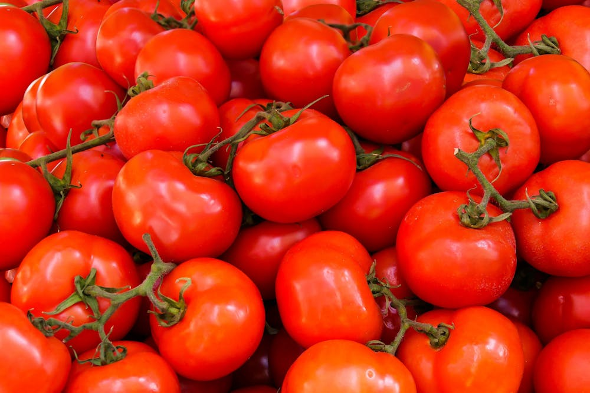
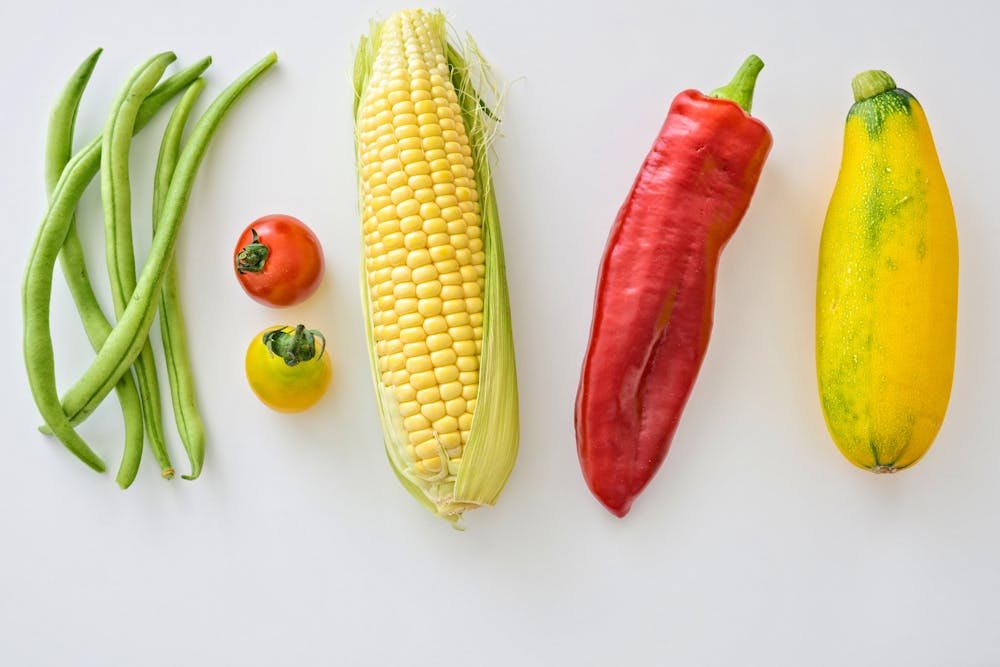
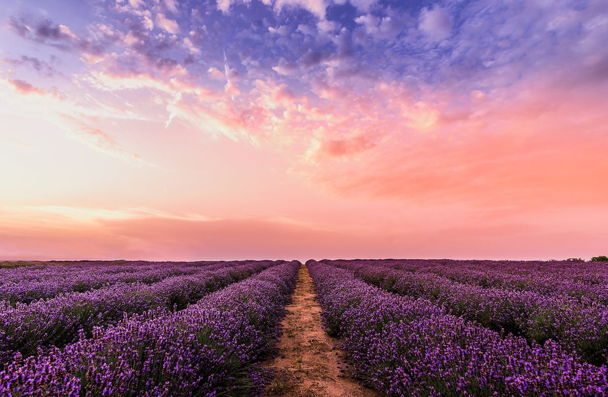

About Us

Our farm is built on a century of experience in sustainable agriculture and organic practices.
Farm Events & Education

Attend hands-on workshops and seasonal events to learn about organic living.
CSA Program

Join our CSA for weekly fresh organic produce boxes.
Sign UpWeekly Harvest Box

Contact Us

Email us at info@cedarholloworganics.com